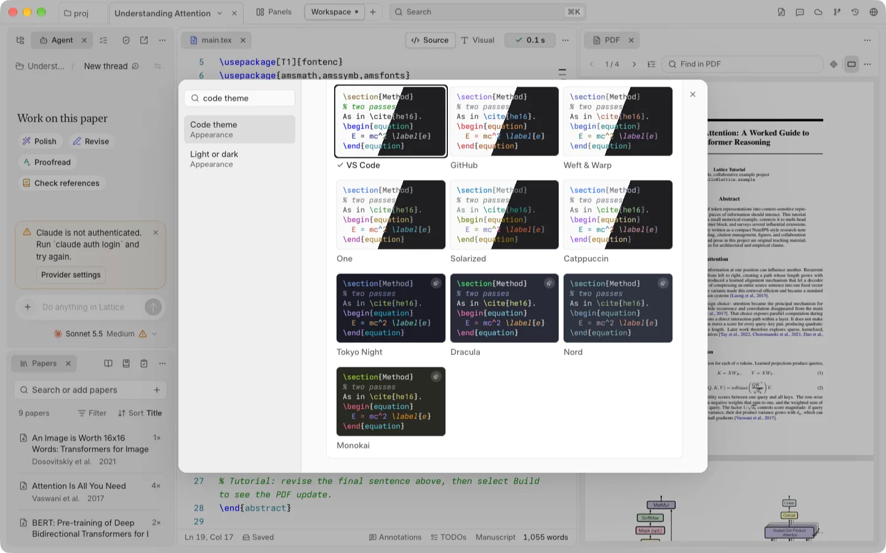

Plugins and themes
Themes
Open Settings › Appearance. Under Theme:
- Color theme picks light, dark or the system's appearance.
- Palette picks Lattice's own colors or a theme you installed.
- Tint, Accent and Translucency adjust the colors and the frosted window background.
- Theme files has Browse themes… (themes others have published: choose Install on one, then pick it under Palette), Install from file… (a theme file you were given), Show themes folder (where your installed theme files live) and Remove theme.

Code themes
The editor's syntax colors are set separately under Code theme on the same page. The default is VS Code (its Light+ and Dark+ colors); GitHub, Weft & Warp (Lattice's own), One, Solarized, Catppuccin, Tokyo Night, Dracula, Nord and Monokai are the others. A code theme you chose stays, and a copy of Lattice that already ran the native version keeps GitHub, the default before 0.20.0, until you choose another.
Light or dark decides which variant shows: Match app follows the app's appearance, or fix Light or Dark; a theme that comes in one variant only says so. Code blocks in the visual editor use the same code theme as source files. An installed theme that sets its own syntax colors wins over the code theme.

Plugins
Plugins add commands to the command palette (⌘K). Each runs in a sandbox and can reach only what you allow when you turn it on.
Open Settings › Plugins. The page has two views, Installed and Browse, and one search field for whichever view is showing.
Browse the plugin market
Browse lists the plugins in the Lattice plugin market. The list is signed, so Lattice refuses one that has been tampered with, and when you're offline it shows the last list it verified. Sort by most downloaded, recently updated or name, and choose Refresh to fetch the list again.
Choose a plugin, or its Install… button, to see its details: who made it, its version and licence, what This plugin can do and what it can't, and the commands it adds. Then choose:
- Install and turn on: installs the plugin and turns it on.
- Install only: installs it turned off, to turn on later.

Installed plugins
Each installed plugin shows where it came from: Reviewed for a plugin from the market, Not reviewed for one installed from a URL, Developer for a folder. Turn a plugin on or off with its switch; turning it on asks first (Turn on Name?) and lists what it will be able to do. A plugin that needs a key or a token gets a field for it on its card, with Save and Clear. Remove a plugin from its card.
When an update is available, the card says so with Update…. Update all applies every update that asks for nothing new. An update that asks for more than you allowed says Asks for new permissions and waits on its own card; Review… lists only what is new, with Allow and update, or Keep the version you have (for example Keep 1.2.0).
If a plugin is withdrawn from the market, Lattice turns it off and says why on its card (Learn more). Plugins run on macOS only for now.
Install a plugin yourself
- Install from URL…: a plugin's
.ziprelease overhttps, checked against the SHA-256 its author publishes. - Install from folder…: for developing a plugin; Lattice runs the folder in place, so your edits apply on the next run.
Writing a plugin or a theme? Start with Your first plugin or Making a theme.